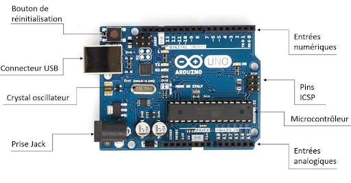
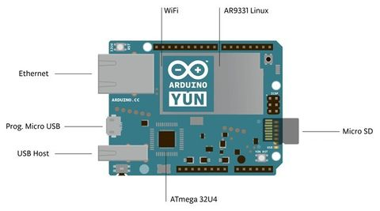
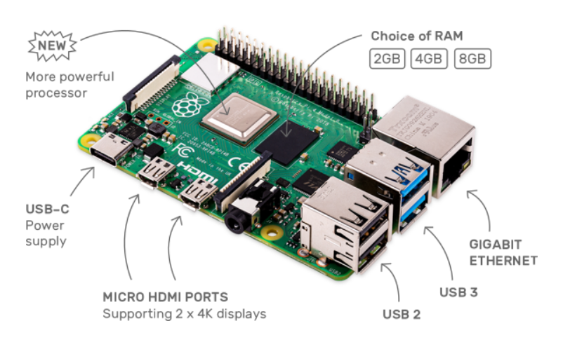
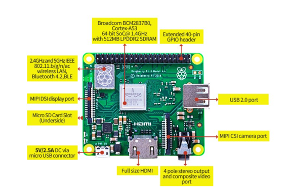

| Explications |
Nous avons retenu deux modèles d'arduino : UNO et YUN. L'Arduino UNO est la plus répendue des cartes arduino, elle a retenue notre attention car elle dispose du nécessaire à la domotique, sans en avoir trop. Elle a des sorties analogiques et numériques, en nombre certes restreint, mais suffisant pour ce projet. Cependant, elle n'intègre pas nativement de connexion à distance, et c'est la raison pour laquelle la YUN à aussi retenue notre intention, ces deux cartes seront donc comparées à la raspberry, mais aussi entres elles |
Nous avons retenu deux modèle de raspberry : Pi 3 Model A+ et Pi 4 Model B. Les deux peuvent répondre le besoin de client. Elles ont retunue notre attention car elles disposent du nécessaire à la domotique, sans en avoir trop. |
| Ports : |
Uno (domotique)
6 analogiques
14 numériques
USB
Ethernet suivant modèle
Jack
YUN
12 analogiques
20 numériques
WiFi
Ethernet
microSD
USB
MicroUSB
|
Raspberry Pi 4 - B 2GB
Micro
Caméra
Audio
Souris
Clavier
Ecran
Ethernet
WiFi
4 * USB
MicroUSB
microSD
40 broches GPIO
Raspberry Pi 3 - A+
Micro
Caméra
Audio
Souris
Clavier
Ecran
WiFi
1 * USB
MicroUSB
microSD
40 broches GPIO
|
| Connexion aux composants externes (LED, ...) |
Direct
A installer : Arduino IDE
|
Non direct
Courrant passable faible, non compatible avec des composants au-delà de ces limites sinon possible de détruire la carte :
Des choses à installer ??
Installables
- - Raspberry Pi Imager
- - Raspberry Pi OS
- - Raspberry Pi Desktop (for PC and Mac)
|
| Système d'exploitation |
UNO :
Non
YUN :
Linux
|
Linux |
| Dimensions |
68.6mm x 53.3mm |
Raspberry Pi 4 - B 2 GB
85mm x 56mm
Raspberry Pi 3 - A+
65mm x 56mm
|
| Langages de programation |
C++, Arduino (C derivative), C, Assembleur, C#, Python, Java |
Python, C, C++, PHP, Java, Javascript, Ruby |
| Puissance délivrée |
40mA par sorties |
16mA par sorties |
| Fréquence : |
UNO :
16MHz
YUN :
16MHz sur la carte + 400 MHz Linux
|
Raspberry Pi 4 - B 2 GB
1.5GHz
Raspberry Pi 3 - A+
1.4GHz
|
| Consomation |
UNO
Alimentation : 5V
Consommation : 50mA
Puissance : 250mW
YUN
Alimentation : 5V
Consommation : 300mA max
|
302.5mA de moyenne
5V
|
| CPU |
8bit |
64bit |
| Audio et Interface graphique |
Non supporté |
Supporté |
| Utilité originelle (créé pour :) |
Controler des machines et effectuer des tâches répétitives |
Traiter des données et communiquer avec d'autres systèmes |
| Modèles |
UNO
- - Processeur ATmega328P 20MHz
- - 32ko mémoire Flash + 1ko EEPROM
YUN
- - Processeur ATmega32U4 16MHz et Atheros AR9331 400MHz
- - 32ko mémoire Flash + 1ko EEPROM + 16Mo Flash
|
Raspberry Pi 4 - B 2 GB
- - Broadcom BCM2711 64-bit quad core Cortex-A72(1.5GHz)
- - 2 GB LPDDR4 (4GB + 8GB supplémentaires)
Raspberry Pi 3 - A+
- - Broadcom BCM2837B0 Cortex-A53 64-bit(1.4GHz)
- - 512 MB LPDDR2 SDRAM
|
| Prix |
UNO : 24,30€
YUN : 58,80€
|
Raspberry Pi 4 - B 2 GB : 42.80€
Raspberry Pi 3 - A+ : 31.75€
|
| Additions communes |
PHMètre (29,99€)
LED RGB (27,99€)
Capteur de température (7,99€)
La/les resistances
Un équipement de distribution automatique de nourriture
|
| Additions spécifiques |
Boitier de protèction Arduino (7.90€) |
Boitier de protection RaspberryPi - (13.54€ 4B - 19.82€ 3 A+) |
| Prix total (carte + équipement) |
UNO : 98.88€ (frais de port 5.50€ inclus)
YUN : 112.48€ en Promo (au 15/10/2020), 119.98€ Hors promo. (5.50€ de frais de port inclus)
|
4B : 121.82€
3A+ : 117.05€
|
| Site et délais de livraison |
UNO :
Arduino Store (1 à 5 jours ouvrés)
YUN :
Arduino Store 1 à 5 jours ouvrés)
|
4B : Elektorstore(4 jours)
3A+ : Reichelt(3-6 jours)
|
| Images |


|


|